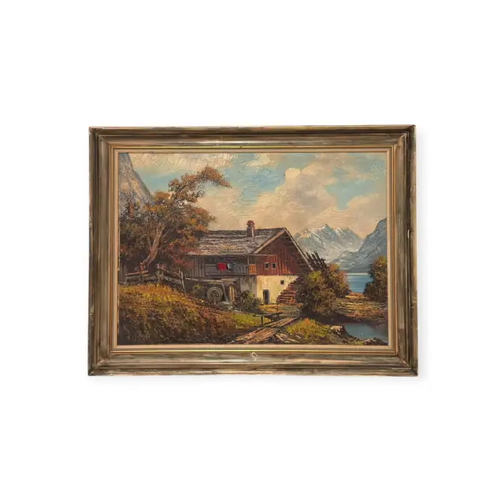
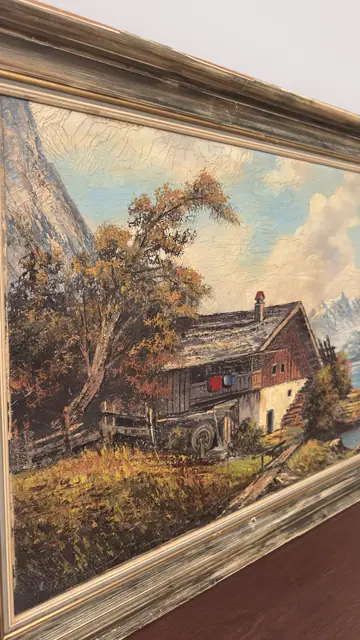
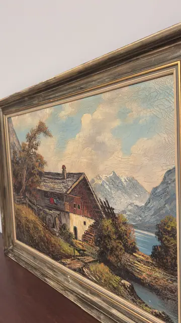

Paintings & Prints
Alpine Farmhouse and Lake Oil Painting, Framed
· mid 20th century
Price Upon Request



About the Item
A broad valley scene painted with a loaded brush: a weathered chalet with a shingled roof, red-shuttered windows and a small water wheel sits on a grassy bank at left under an autumnal tree, with a rail fence running down the slope. Beyond, a green-blue lake curves away toward jagged snow mountains under towering cream and white cumulus. Colour is bright and decorative - sky blue, olive, russet and cream - and the sky carries a dense network of fine craquelure. Medium: oil on canvas. Condition: Fine overall craquelure is clearly visible across the sky and clouds; frame gilding rubbed at the corners; no tears or losses seen.
Details
- Creation Year:
- mid 20th century
- Dimensions:
- Height: 24.6 in (62.48 cm)
Width: 32.5 in (82.55 cm)
outside of frame - Medium:
- oil on canvas
- Period:
- 20Th
- Condition:
- Offered in the condition shown in the photographs.
- Reference Number:
- VO-110
- Documentation:
- no certificate or label photographed; the back was not shown